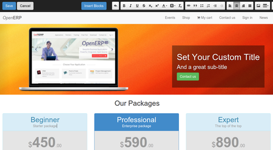
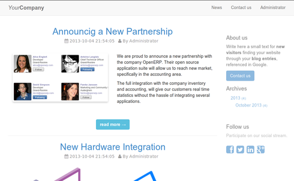

Fully Integrated With Others Apps
Get hundreds of open source apps for free

CMS
Easily create awesome websites with no technical knowledge required.
Blogs

Write news, attract new visitors, build customer loyalty.

Online Events
Schedule, organize, promote or sell events online; conferences, webinars, trainings, etc.